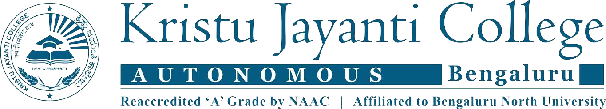

Chief Editor: Rev. Dr. Augustine George, Principal | Dr. R. Kumar, HOD
Ms. Rekha
1
st Rank
Ms. Swapna
2nd Rank
Mr. Daniel
3rd Rank
Ms. Punitha Sakthivel,
Assistant Vice President, Wells Fargo, Bengaluru
The ripple impact of Artificial Intelligence has spread from one industry to more than any other, including the Banking industry. The widespread adoption of AI in Banking & Financial Services is inevitable in order to keep up with competition, and increase
their standing as an innovative company. Artificial intelligence has several applications in the banking industry. The innovative applications of artificial intelligence in the Banking industry will revolutionize the industry in the upcoming
years. AML Pattern Detection is one such application. Anti-money laundering (AML) states to a set of processes, laws or protocols intended to stop the practice of spawning income through illegal actions. In most of the circumstances, the
money launderers hide their activities through a sequence of stages that make it look like money that came from illegal or unethical sources are earned legitimately. Most of the major banks across the globe are shifting from rule based
software systems to artificial intelligence based systems. These systems are more robust and intelligent to the anti-money laundering patterns. Over the years, these systems become more and more accurate and fast with the continuous innovations
and progresses in the field of AI.
Yet, a single or individual language for artificial intelligence has not been conceived till now. However, developers attain great results using existing tools. In many use cases,
Java is identified as one of the best language for AI projects. Java works on artificial intelligence programming and it can be used to create machine learning solutions, neural networks, search algorithms, genetic programming and multi-robot
systems. Java is object-oriented and scalable, which are also essential features for AI projects. Virtual machine technology improves Java portability, maintainability and transparency. Since artificial intelligence is tightly connected
with algorithms, one more point in favor of Java in AI programming is the ability to code different types of algorithms. Java is a noble choice for large-scale projects. Since it has a built-in garbage collector it can automatically deletes
inadequate data, facilitates visualization and incorporates Swing and Standard Widget Toolkit. These tools create appealing graphics and interfaces. The substantial Java community with its millions of members worldwide is a great reason
for even a beginner to learn and create effective solutions easily. Though Java is multi-platform, it entails major adjustments of software and hardware to work on older platforms. As of now, Java is an immature AI language, and ongoing
developments are being carried out. The use of AI for fraud prevention and other banking application is not a new concept. In fact, AI solutions using Java are there to enhance security across a number of business sectors, including retail
and finance. It is evident that AI is impacting a large number of industries; Banking is an quick adopter of this trend. This trend is likely to grow exponentially in the future. Companies that embrace this trend are likely to be frontrunners
in the coming years.

Rev Dr Augustine George
Principal
Information Technology fosters innovations. Artificial Intelligence, automation, geotargeting and other advancements helps significantly to improve the lives of ordinary man in a rapid manner. The pandemic has changed various elements of our society; one of the most prominent among all being the field of teaching- learning. Faculty Members of Kristu Jayanti College are enthralled to be a part of this virtual learning environment. Teachers and students got adapted quickly to the new mode of online teaching to continue learning during this new normal. The Post Graduate Department of Computer Science always aspire to enrich the learning experience of students by involving students in software development activities, projects and research works. The culture of sharing and participation augmented by interactive learning and use of online resources with a culture of participation has laid a successful foundation for the student future. It is that time of the year when another edition of ‘E-Technobytes- the e- newsletter’ is seeing light: time for creative ideas, thoughts, reflections, academic exercises to grapple with the complex issues from the area of computers and related applications and the human interest stories from the Post Graduate Department of Computer Science I commend the enthusiasm and the spirit with which this new issue of ‘E-Technobytes’ is coming out and congratulate the team behind making of this issue. May it provide the sense of accomplishment to all who worked for it to see light and let it be a for the intellect of all who read and enjoy the content of the new issue of ‘E-Technobytes’.

Dr. Calistus Jude A.L.,
Dean Faculty of Sciences
To remain competitive in the 21st century, the global community is emphasizing creativity and innovativeness as main impetus in various sectors. Through creativity and innovation comes uniqueness. There is a great demand for individuals who can think creatively and be innovative. Innovativeness is fundamental to Computer Science and the field itself makes it simple to be inventive. Computer Science is a standout amongst the most dynamic fields, where new learning, new advancements, and new speculations constantly rise. In addition, creativity is vital issue for the future of new innovation frameworks. At the Department of Computer Science [PG], Kristu Jayanti College, there exists three drivers for innovativeness; the students with inspiration and interest, the environment and the different courses and activities. E-Technobytes expects to enlighten the different activities at the department. From displaying talent on various arenas to voicing out suppositions on current patterns, this issue of E-Technobytes is an impression of the strong feeling of inventiveness among the scholarly crew of the Department of Computer Science [PG]. Congratulations to the team which has brought out this issue.

Dr. R. Kumar,
Head, Department of Computer Science (PG)
The Post Graduate Department of Computer Science offers two programmes, Master of Computer Applications (MCA) and M.Sc in Computer Science. MCA programme started in the year 2004 with the objective of imparting technical education to aspiring youth to mould them into professionally competent workforce. From this academic year 2020 MCA is a two year programme designed to impart conceptual and technical knowledge in the field of computer applications and to nurture analytical, logical, and designing skills with the influence of implementing skills for industry, academics, research and entrepreneurial pursuit. M.Sc in Computer Science is a two year Master’s degree programme. The autonomous curriculum is designed to hone strong software competencies, analytical and problem solving skills which are essential pre requisites for a successful software professional. The course structure and contents are regularly updated as per the latest requirement. The learning environment is intense and stimulating. The regular academic programmes is enhanced by seminars, workshops, personality development programmes, attitudinal programmes, soft skills training, tech talk series, student seminar series, communication sessions, paper presentations and aptitude reinforcement modules. Experts from industry take sessions continuously. The students have participated in inter-collegiate fest in this semester and won overalls. The students and the faculty members are exposed to the latest developments in the industry. As part of knowledge sharing, peer to peer teaching is motivated amongst the students. The academic transactions are rigorous and innovative. Our students attended various technical meet ups conducted by IT industries and gained knowledge in new domains and got acquainted with cutting-edge technologies. Faculty members of our department acted as resource person for the in-house workshops and also for the workshops conducted in other colleges. At present there are 158 students in the department.

Dr. Muruganantham Alagiah received the “Teacher Innovation Award” by Sri Aurobindo Society for sustainable efforts towards promoting joyful and experiential learning.

The Department of Computer Science (PG), Kristu Jayanti College organized the 8th edition of the International Conference on Current Trends in Advanced Computing on 6th and 7th May 2020 through an Online Conference. The Department of Computer Science
(PG) understood the unprecedented situation existing because of the COVID-19 pandemic outbreak and thought on its feet and moved the conference to the online platform. The original conference dates were March 19th and 20th and all necessary
arrangements were made. The same speakers were retained and they were very happy to oblige and be part of this initiative by the Department of Computer Science (PG). The International Conference on Current Trends in Advanced Computing (ICCTAC)
was set to provide an excellent forum for sharing knowledge and results in theory, methodology and applications of recent trends in Information Technology by internationally and nationally renowned experts in the field. The aim of the conference
was to provide a platform to the researchers and practitioners from academia and industry to meet and share cutting-edge development in the field of Computer Science benefitting 196 participants that specifically included research scholars,
faculty members and industry delegates.
The session on 6th morning had Mr Amit Kumar Saha, Principal Engineer, Office of the Cloud CTO, Cisco Systems (India) Private Limited as the Chief Guest and Dr. Arduino Masaleno, Institute
of Informatics & Computing Energy, Universiti Zenaga Nasional (UNITEN) Putrajaya, Malaysia as ‘Guest of Honour’. Dr A. Muruganantham, Conference Convener offered the welcome speech, Rev. Dr. Augustine George, Principal, Kristu Jayanti College,
Bengaluru delivered the presidential address and Mr Amit Kumar Saha, delivered the inaugural address. Dr. Ardino Maseleno, Institute of Informatics & Computing Energy, Universiti Zenaga Nasional (UNITEN) Putrajaya, Malaysia was the resource
person for Technical Session I. He discussed the need of Innovation in Research in a very interesting way. He discussed about Smart Grid in Malaysia and elaborated on some analysis of the Publications on Smart Grid Ontology. Mr. Biswajit Mishra,
Cognitive Head, IpSoft, Bengaluru conducted the Technical Session II on the topic “Digital Twin and Blockchain”. He shared his insights on the Role of Human Digital Twin. He also discussed about the industrial advancements and the scenarios
that would prevail due to the current pandemic (Covid-19). The second day of the conference on May 7th, 2020 started with a technical session on “Digital transformation and Live Enterprise”. The session was handled by Mr Victor Sundararaj,
Head Engineering Academy, Infosys Limited, Bangalore. Mr Victor Sundararaj, addressed the participants on the latest technologies and the influence of it in the day to day life of human beings. The next session of the day was handled by Dr.
Kunwar Singh, Assistant Professor, National Institute of Technology, Trichy, TamilNadu. The topic for the session was “Bitcoin Wallet”. A Bitcoin wallet is a software program where Bitcoins are stored. To be technically accurate, Bitcoins
are not stored anywhere; there is a private key (secret number) for every Bitcoin address that is saved in the Bitcoin wallet of the person who owns the balance. Bitcoin wallets facilitate sending and receiving Bitcoins and give ownership
of the Bitcoin balance to the user. The Bitcoin wallet comes in many forms; desktop, mobile, web, and hardware are the four main types of wallets . The session was very informative for all the participants. The last session for the second
day was handled by Dr. Vishwas Lakkundi, Principal Architect, Smarten Spaces, Chair – IEEE Computer Society, Bangalore Chapter. He spoke on the topic Zero Trust Security Framework.
The two day conference had many participants participating
online from various colleges. Around 200 participants from different part of the country attended the conference. 70 papers were received for presentation and publication which reduced to 24 after three levels of blind review process by the
Expert Review committee. The selected papers will be published in reputed International Journals of Scopus Indexed and Springer Nature. Paper presentations were held on both the days in two sessions where each session consisted of six presenters.
Track1 session was chaired by Dr. Balaji, HOD, Department of MCA, Surana College and Dr. Muruganantham, Professor, Kristu Jayanti College, Bengaluru. Track2 session was chaired by Dr. Ambika.P, Senior Data Scientist, Impact Analytics, Bengaluru
and Dr. Velmurugan, Professor, Kristu Jayanti College, Bengaluru. Overall, ICCTAC-2020, An Online Conference, conducted by Department of Computer Science (PG) was a grand success with the participants giving very positive feedback about the
same. The session was convened by Dr. A Muruganantham and chiefly by Dr. Kumar R. Click here for more details.

Intercontinental Webinar Series was held for 5 days from 9th to 13th of June 2020, 4:00pm to 7:00pm on a virtual meeting platform Zoom. The resource persons were Dr. Cat Kutay, Software researcher, Top End Language Lab (TELL) and Dr. Bharanidharan Shanmugam,
Lecturer in Information Technology, College of Engineering, IT & Environment at Charles Darwin University, Darwin, Australia, Prof. Mike Hinchey, President of International Federation for Information Processing, Emeritus Director of Lero-the
Science Foundation Ireland Centre for Software, Professor of Software Engineering at University of Limerick, Ireland, Europe, Mr. Ndimangwa Fadhili, CEO and Founder, Zoomtong Company Limited, Tanzania, Africa, Dr. Benjamin Premkumar, Associate
Professor, Singapore Institute of Technology, Singapore, Asia, Dr. Mitra Bokaei Hosseini, Assistant Professor of Computer Science and Dr. Ozgur Aktunc, Professor of Software Engineering, Graduate Program Director of Engineering Systems Management,
Industrial Engineering and Software Engineering, St. Mary’s University, San Antonio, Texas, USA. The beneficiaries of this enriching session were a total 125 members that included external participants, computer science post graduate students
and faculty members. The programme aimed to fill more values in terms of Information Technology insights as expert speakers from all around the globe deliver their ideologies to the beneficiaries.
The Department of Computer
Science (PG) organizes many webinar series and this webinar was the first ever of its kind. Seven expert Speakers from five different continents interacted with the participants through online platform and delivered their technical inputs
on the topic themed “Emerging Trends in Information technology”. This is a refined version of the department’s renowned trademark programme International Lecture Series which is conducted every semester for the post graduate computer science
students and faculty members of the department. This time the sessions were opened for outside participants also. The distinguished speakers shared their insights on the topics “Teaching Language Online”, “Smashing Application Vulnerabilities
at the Source”, “Evolving Critical Systems”, “Trend in Digital Transformation in Healthcare”, “5G New Radio Technologies”, “Privacy by Design in Software Engineering Life Cycle”, and “Latest Trends in Agile Development” covering a variety
of domains related to the advancements in each of them. The students made the session more interactive by posting important queries which had benefitted all the participants. The participants felt the session to be very enlightening and new
as they gained knowledge from globalized perspective, based on emerging trends in Information Technology as reported by Prof. Vani C. Click here for more details.
Sheik Faridh Nowfal N Z,
V Sem MCA
Edge Computing is the process of preforming the computing operation at the edge of the Network, instead of performing on the core of the network. The latest technique in IoT is using an Edge-Computing. Edge Computing in IoT is used to provide a faster
processing between the sensors, ensures the low latency and it reduce the bandwidth consumption, offline availability and local Machine-Learning inference. Edge Computing decentralize most of the process by pushing it to the edge of the network.
It is a mesh network of microdata, that is IoT centres create and store the data locally before it is stored in data centre or cloud. Since the storage and processing power are decentralized, it ensures the working and operation of IoT device
even in remote places. The edge computing in IoT works in such a way, where the data are collected from the surrounding and it is stored in the edge. The cloud will take a decision based on the data stored on the edge. Edge computing in IoT
has four layers. In the first layer (Bottom) we have sensors, which will sense and gathers a data. Then those data will be stored in the Second layer which is Edge layer. In the Edge layer the devices and application work with those data.
This were the edge computing steps in and reduce the complexity in working. The basic operation like machine learning are performed and basic decisions were taken based on the stored data in this layer. It reduces the network complexity and
make sure that data is also available for real time process. It also ensures that the data are kept more secured as it doesn’t travel through various mediums. The third layer is the Fog computing layer. Fog computing also stores some data
for various operations. The data stored in Fog can be distributed in a large scale. The fog computing can be used to perform complex process and real time analysis on the stored data. Also, the fog layer act as bridge between edge and cloud
layer. In this layer the LAN (Local Area Network) is used in order to move the data to cloud for further process. The fourth layer (top layer) is the Cloud layer. In this layer the complex operation like data Analysis, deep learning and machine
learning are performed. The example of Edge Computing in IoT is a Smart car. Usually the smart car will gather lot data from road, and those data will be stored in the Edge server in the car. This data can be used to find the status of the
signal and nearby objects. When the car is autopilot mode, the speed of the car is automatically changed or maintained with the constant the speed with the help of data available the edge. The data stored in the fog can be used to track the
battery percentage and it is also used to book a slot in the nearby charging station when the battery percentage goes less than the limit. The data stored in the cloud can be used for various purposes like tracking of the car, and to support
the owner of the car by providing maintenance details.
References:
•
Stewart Cristan - What is FOG Edge Computing
•
Dzone - Introduction to Edge Computing
•
IoTForAll - Is IoT Computing Edge Ready?

Dr Gopichand Katragadda, CEO of Mylin Foundry
Click to view Gallery
Vinimay - Leadership Series organized on 16th January 2020 at Kristu Jayanti College Autonomous emphasized on the topic Artificial Intelligence - A Boon or Bane. The objective of the series was to provide exposure on Artificial
Intelligence(AI) for the budding managers. The series started with a holy choir song followed by lighting the lamp. Mr. Jibin Jose, student coordinator welcomed the gathering of 169 students that included MBA and MCA students, and Mr. Joshua
George Thampy introduced the chief guest Dr. Gopichand Katragadda, Founder and CEO of Myelin Foundry to the audience. Dr. Aloysius Edward, Dean of Commerce and Management welcomed the guest with a bouquet of flowers.
Dr. Gopichand commenced
his interesting speech with various examples to bring out the tricky question - if AI is boon or bane to mankind. He also elaborated on the reasons behind him being rooted in augmented reality(AR) than into virtual reality(VR). He also briefed
about VR in human life and it’s impact on thr users. Dr. Gopichand also narrated and reflected on some of the achievements that he made in his former company.
The leadership session led by Dr. Gopichand Katragadda was motivating and
helped all those who were present with a ambiguous understanding of AI. A questionnaire session was also held at the end. Ms. Namitha Mariam, student coordinator, proposed the vote of thanks to the guest. Dr. R Kumar, Head, Department of Computer
Science(PG) gave a memento as a token of love and gratitude on behalf of the college to the chief guest Dr. Gopichand Katragadda. Ms. Swami Thirumeni, the MC of the session concluded with singing the college anthem. In the words of Jeffin
Sebastian of I year MBA Sec B, “It was a motivational cum technical session. The personal and career life of the speaker was challenging and inspirational as well.” As reported by Prof. John Pradeep Kumar. You can also visit the site for more details.
| S.No. | Date of the Event | Title of Fest | Host Institute and Venue | Name of the competition | Name of the participant(s) | Prizes won | Total No. of Participants and Prizes Won | Overall Position[W/R] |
|---|---|---|---|---|---|---|---|---|
| 1 | 30/8/2019, 31/8/2019 | Computantra, 2K19 | Presidency College, Hebbal, Bengaluru | IT Quiz | Shobhan Manik, James Thomas | I | 10 Students, 4 Prizes Won | Runners |
| Movie Making | Sijoy S Samuel, Jehova A Lalsuongum | I | ||||||
| 2 | 19/9/2019, 20/9/2019 | Gateways 2k19 | Christ University, Bengaluru | IT Quiz | Daniel Paul, James Thomas | I | 15 Students, 6 Prizes Won | Winners |
| Cinematography | Abel Sam, Melvin M Moncy | I | ||||||
| IT Manager | Simon Sebastian | I | ||||||
| Surprise Event | Achuth P, Don Johnson | II | ||||||
| Coding | Dolwin Davis, Jiran Kurian | I | ||||||
| Product Launch | Achuth P, Daniel Paul | I | ||||||
| 3 | 12/9/2019 | SHARP 19 | Sacred Heart College Tirupattur, Vellore Dist., Tamil Nadu | Brain Blazer | Daniel Paul, James Thomas | I | 10 Students, 6 Prizes | Winners |
| Cyber Blabber | Achuth P, Joel Joy | I | ||||||
| Web Spider | Ajith Kumar, Md. Imran Khan | I | ||||||
| Code Master | Dolwin Davis, James Thomas | I | ||||||
| Soft Seller | Simon Sebastian | I | ||||||
| Tech Talker | Jincy Johnkutty, Lincy Joseph | I | ||||||
| 4 | 26/9/2019, 27/9/2019 | Joshina 10.0 | St. Joseph's College, Mangalore | Photography | Abel Sam | I | 15 Students, 3 Prizes Won | Runners |
| IT Manager | Simon Sebastian | I | ||||||
| Tech Talk | Achuth P. | II | ||||||
| 5 | 9/10/2019, 10/10/2019 | Techno Melange 2019 | Manipal Institute of Technology, Manipal | IT Quiz | Shoban Manik, Josbin Joseph | I | 9 Students, 5 Prizes Won | Winners |
| Documentary | Abel Sam | I | ||||||
| Gaming | Achuth P, Aswin Mohan | I | ||||||
| 6 | 5/11/2019, 6/11/2019 | Sursangram | Surana College, Post Graduate Studies, Bengaluru | Coding and Debugging | Mahato Niteesh Kumar, Nikhil Hari | I | 12 Students, 6 Prizes | Winners |
| Photography | Aneesh Mathew | II | ||||||
| Project Execution | Pereira Blinsia, Mahato Niteesh Kumar | I | ||||||
| Logo Design | Nikhil Hari, Md. Jonaid Ansari | I |
Manoeuvre, the intra-collegiate fest is the flagship event of the Department of Computer Science (PG). The final year students of MCA organise the event, while the first and second year students participate in the events. Each year, the events are organised on various themes relevant for the time; this academic year the theme is 5G, and with the tagline "Resillience with Technology". Manoeuvre will organise events such as IT manager, IT quiz, coding and debugging competition, Web designing competition, Treasure hunting, Product launching competition, Videography competition, App development competition, and Ice breaker events.
The Department of Computer Science (PG) of Kristu Jayanti College (Autonomous), Bengaluru is organizing the Ninth Edition of Two days International Conference on Current Trends in Advanced Computing on March 18 & 19, 2021.
The International
Conference on Current Trends in Advanced Computing (ICCTAC) will provide an excellent international forum for sharing knowledge and results in theory, methodology and applications of recent trends in Information Technology. The aim of the
conference is to provide a platform to the researchers and practitioners from both academia as well as industry to meet and share cutting-edge development in the field of Computer Science.
The intercollegiate IT fest conducted by the Post Graduate Department of Computer Science is a platform to exhibit technological expertise, it is a fusion of technology and accomplishments. This fest aims at discovering students inner potential. Shells 2021 offers a platform for students from various institutions to exhibit their talents. The programmes for the fest includes Web Designing, Coding, IT Manager, IT Quiz, Gaming, photography/video making and Treasure Hunt.

Dr. Muruganantham A
Professor

Dr. Jyothi Manoj
Professor

Ms Bhavana N
I Sem MCA

Mr Nikhil Hari
III Sem MSc CS